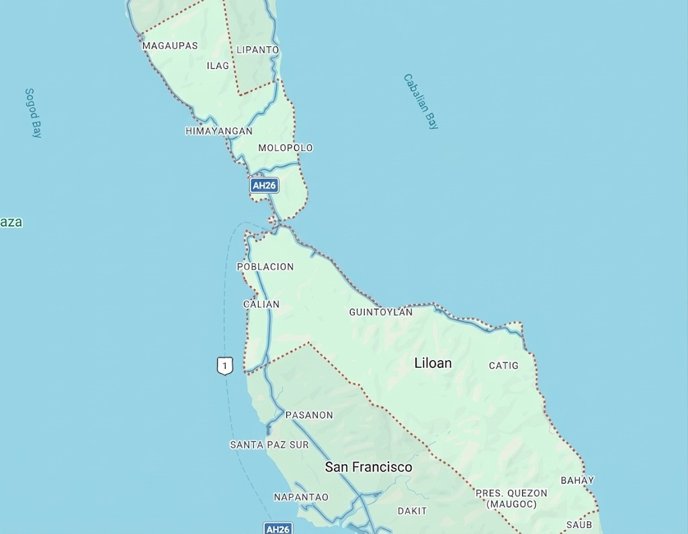
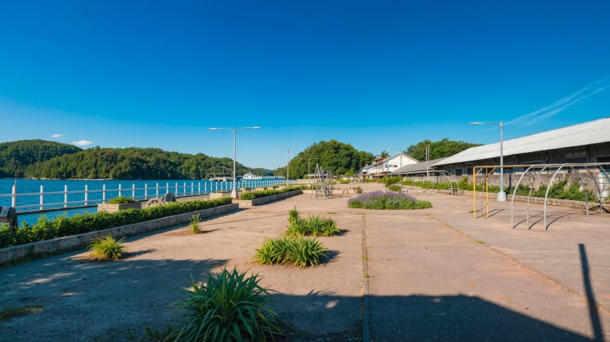
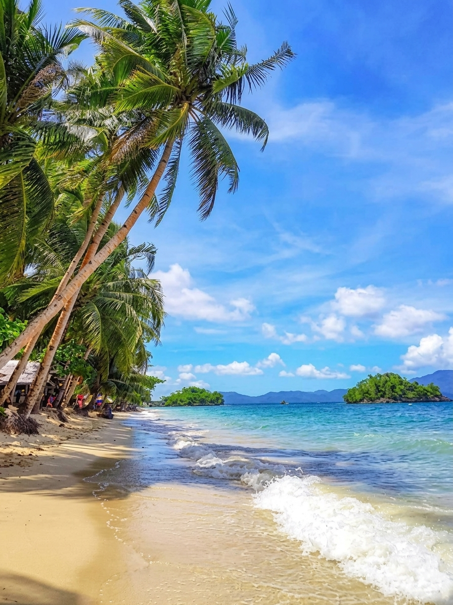
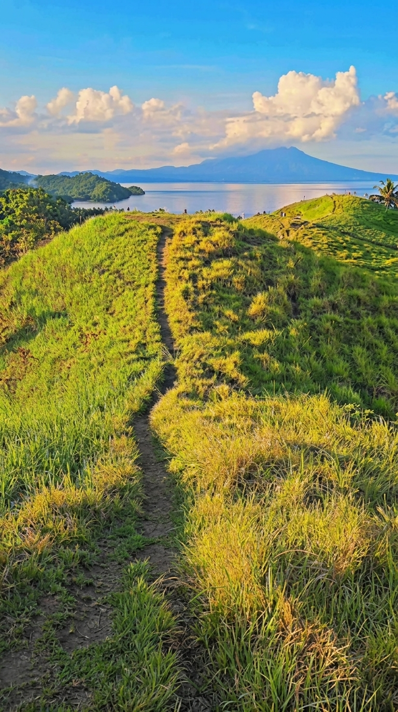
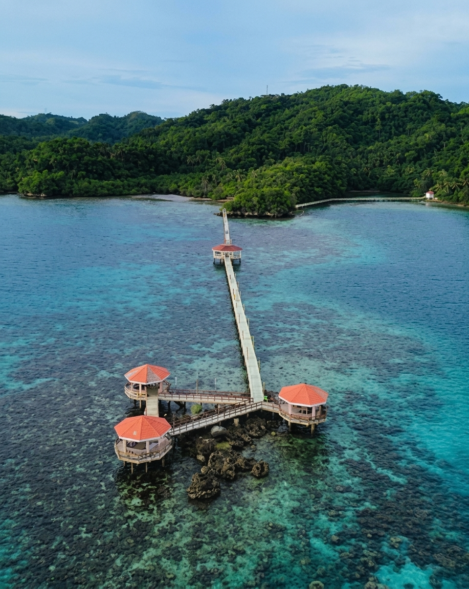
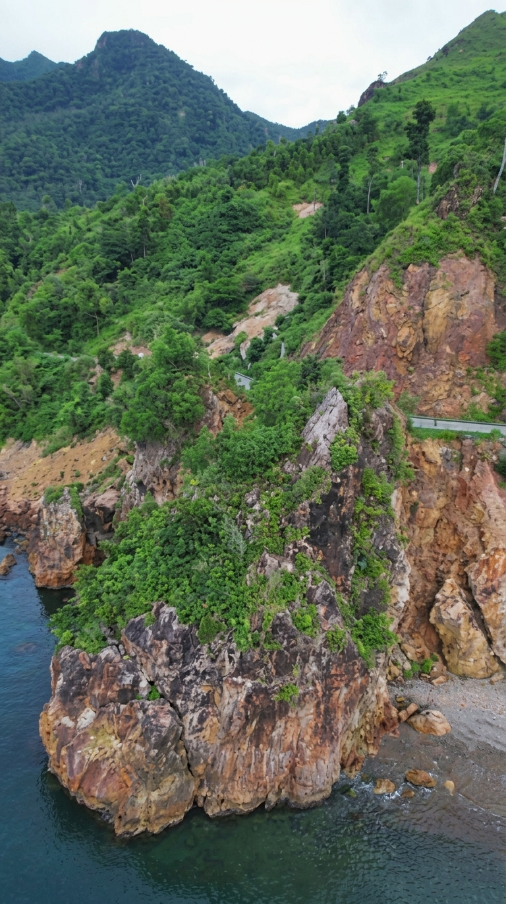

Hover a marker on the hometown map below and its name appears; click it to jump straight to that spot's details further down the page.

Hover a pin to see the spot's name and photo. Click it to jump to the full details below.
Each spot below corresponds to one marker on the map above.
Sits right along the Poblacion shoreline, next to the AH26 coastal highway — the natural gathering spot along the water, a short walk from the town center.
Additional description placeholder — more photos and details will go here.


Up the coast near Barangay Molopolo, on the Himayangan boundary — a short drive north along the coastal road from Poblacion.
Additional description placeholder — more photos and details will go here.
Rises just behind Poblacion, close enough to the town center to reach on foot or a short tricycle ride.
Additional description placeholder — more photos and details will go here.


A protected stretch of water off the Poblacion coastline, between the town center and Molopolo — home to seagrass beds that quietly pull CO2 out of the water.
Additional description placeholder — more photos and details will go here.
Tucked into the coastline near Barangay Catig, on the eastern side of town facing Cabalian Bay.
Additional description placeholder — more photos and details will go here.

Separate from the five map markers above — additional spots worth a stop.
Body text placeholder — details to follow once supplied.
Body text placeholder — details to follow once supplied.
Body text placeholder — details to follow once supplied.
Body text placeholder — details to follow once supplied.
Body text placeholder — details to follow once supplied.